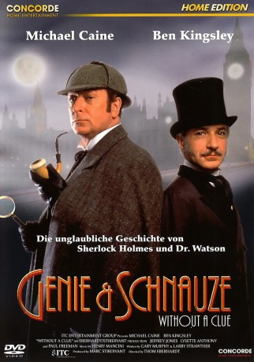
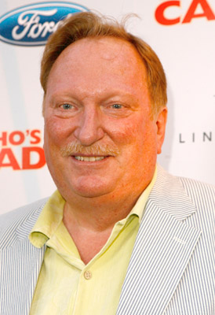
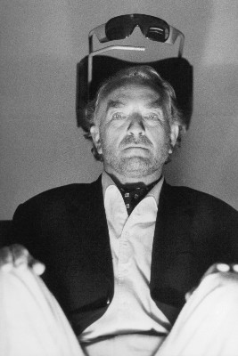
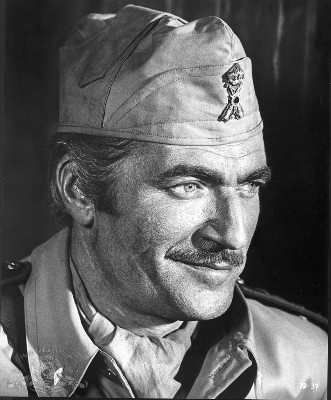
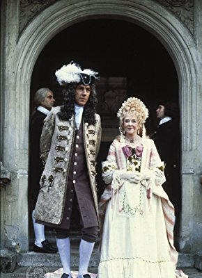
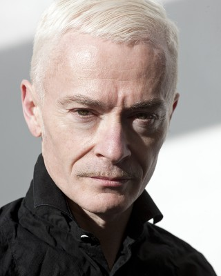
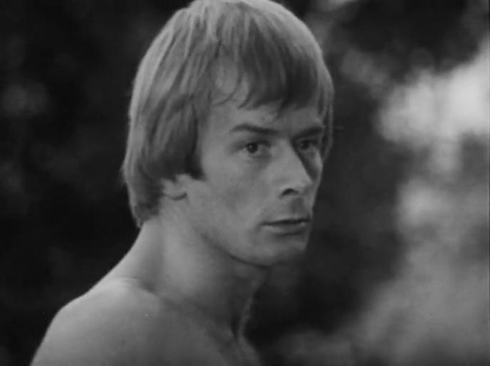

#8109 Genie und Schnauze
Alternativ: Without a Clue
 
 IMDB-Wertung: 7.0 / 10
IMDB-Wertung: 7.0 / 10  Metascore: 0
Metascore: 0 
Sherlock Holmes hat es nie gegeben. Dr. Watson ist in Wirklichkeit das Superhirn und präsentiert den drittklassigen Schauspieler, Trinker und Schürzenjäger Reginald Kincaid der Öffentlichkeit als Sherlock Holmes. Als Watson seinen Strohmann nach einem seiner Exzesse entläßt, muß er feststellen, daß an der Wahrheit kein Interesse besteht und niemand dem “Assistenten” Watson einen Fall anvertrauen will. Kincaid wird reaktiviert und steht mehr oder weniger zufällig bei der Wiederbeschaffung gestohlener 5-Pfund-Druckplatten seinen Mann, mit denen Bösewicht Moriarty die britische Wirtschaft in den Ruin treiben will.
Jahr: 1988
Dauer: 106 Minuten
FSK: 12
Land: England Studio: Concorde Home EntertainmentTonspuren:
Untertitel:
Auflösung: 1080p (1920x1080) Größe: 9093 MB
Genre: Komödie, Krimi, Mystery
Regisseur: Thom Eberhardt
Drehbuch: Gary Murphy
Soundtrack: Henry Mancini
Darsteller:
 Michael Caine als Reginald Kincaid / Sherlock Holmes
Michael Caine als Reginald Kincaid / Sherlock Holmes Ben Kingsley als Dr. Watson
Ben Kingsley als Dr. Watson-  Jeffrey Jones als Inspector Lestrade
- Lysette Anthony als Leslie Giles
-  Paul Freeman als Prof. James Moriarty
-  Nigel Davenport als Lord Smithwick
-  Peter Cook als Greenhough
-  Matthew Sim als Real Lesley
- Harold Innocent als Mayor Johnson
- Michael O'Hagan als Reporter #2
- Gregor Fisher als Bobby at Warehouse
 Steven O'Donnell als Bartender
Steven O'Donnell als Bartender- James Bree als Barrister
- Clive Mantle als Thug #1
-  Andy Bradford als Dockworker
- Pat Keen als Mrs. Hudson
- Tim Killick als Sebastian
- Matthew Savage als Wiggins
- John Warner als Peter Giles
- George Sweeney als John Clay
- Murray Ewan als Archie
- Stephen Tiller als Reporter #1
- Ivor Roberts als Reporter #3
- Martin Pallot als Photographer
- Caroline Milmoe als Constance
- Sarah Parr-Byrne als Singer
- Dave Cooper als Thug #2
- Richard Henry als Hadlers
- Lesley Daine als Lady on Train
- Jennifer Guy als Christabel
- John Tordoff als Mr. Andrews
- Alexandra Spencer als Mrs. Andrews
- Elizabeth Kelly als Landlady
- Sam Davies als Local #1
- Adam Kotz als Local #2
- John Surman als Constable at Lakes
- Les White als Henchman #1
- Chris Webb als Henchman #2
- Evan Russell als Sergeant at Docks
- Alan Bodenham als Driver
- Prince the Wonder Dog als The Duke
Datei: X:\1988\Genie und Schnauze (1988, FSK12, 1920x1080).mkv seit 24.01.2018
Festplatte: HD 1987-1991
 Es gibt insgesamt 66 Filme in der Gruppe '1988'
Es gibt insgesamt 66 Filme in der Gruppe '1988'